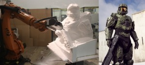

Last Thursday night, we were lucky enough to join a select number of guests to go behind-the-scenes at one of Britain's most successful and longstanding physical special effects companies, Artem SFX, to see how they are using the latest cutting-edge technology in the most creative ways. The studio floor is home to some iconic and fascinating characters and props – walking in we were greeted by Churchill the dog and a Dalek. Busy in one corner of the workshop in Perivale, West London, was a robotic arm, carving out a bust of iconic computer game character Masterchief from Halo. Originally used in the automotive industry, Artem has one of the most advanced robotic arms in the UK right now, and is one of the only companies using it in such a creative way.
A 3D scanner was scanning one of Artem's many sculptures they keep in house, and in another area, a 3D printer was running, with various models that have been created on it over the past year on display next to the machine. Meanwhile, Brian the Robot from the confused.com campaigns, created by the Artem team, was gliding around and making sure everyone was having a good time. Over the last few years the digital revolution has reached out and taken hold in the physical world of special effects, giving it a welcome shake-up in the process. Most items built are now drawn on computer before any construction starts, and the techniques employed to realise the designs are very sophisticated, from laser-cutting steel to 3D printing plastic components. For a glimpse of what guests experienced on the night, here's a short video of the amazing robotic arm in action: http://vimeo.com/74704398. And finally a HUGE congratulations to directors Callum Macrae (No Fire Zone), James Hawes (The Mill), Penny Woolcock (One Mile Away) and Olly Lambert (Mum and Dad are Splitting up) – who all made Broadcast’s Top Ten Directors 2013 and who we were lucky enough to work with this year.